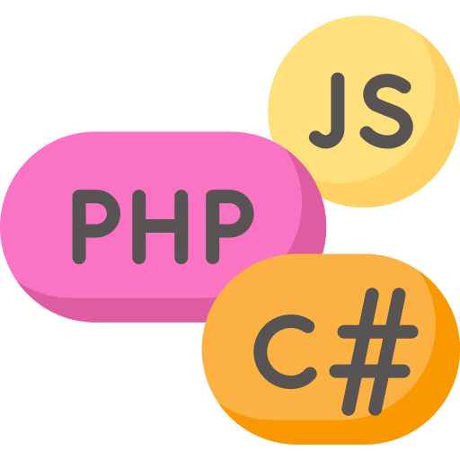
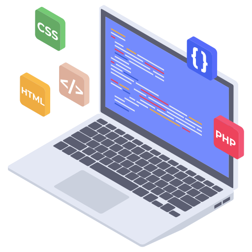

Al igual que la pila (stack), la cola es una estructura lineal que sigue un orden particular en el que se realizan las operaciones. Este orden es FIFO (first in, first out - primero en entrar primero en salir) en una cola los elementos se insertan por un extremo y se elimina por el otro extremo. La diferencia entre pilas y colas está en la forma de eliminar los elementos, en una pila se elimina el elemento añadido más recientemente, mientras que en una cola se elimina el elemento añadido hace más tiempo.
offer(e) / add(e): Añade un elemento al final.
poll() / remove(): Obtiene y elimina el primer elemento.
peek() / element(): Obtiene el primer elemento sin eliminarlo.
import java.util.*; public class ColaEjemplo { public static void main(String[] args) { Queue<String> cola = new LinkedList<>(); cola.add("Persona 1"); cola.add("Persona 2"); cola.add("Persona 3"); System.out.println("Cola inicial: " + cola); System.out.println("Atendiendo a: " + cola.poll()); System.out.println("Siguiente en la cola: " + cola.peek()); System.out.println("Cola final: " + cola); } }
Funcionamiento (FIFO): El primer elemento insertado es el primero en ser eliminado.
Interfaz Queue: Proporciona métodos para insertar, eliminar y examinar elementos, como add()/offer() para agregar, poll()/remove() para eliminar, y peek()/element() para consultar.
Implementaciones comunes: Las clases que implementan Queue incluyen LinkedList, PriorityQueue, ArrayBlockingQueue y ArrayDeque.
Usos: Ideal para gestionar tareas en orden, como en colas de impresión o algoritmos de búsqueda en anchura (BFS).
Inicio